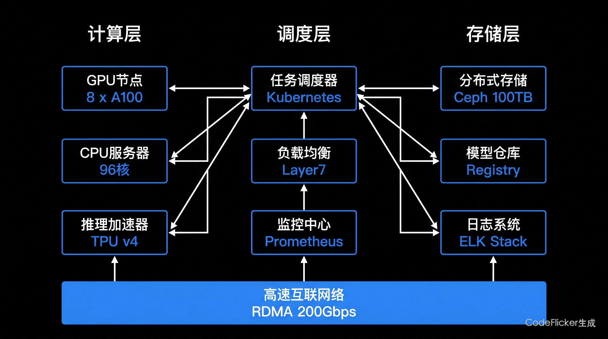
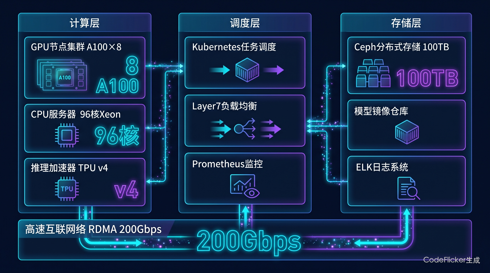
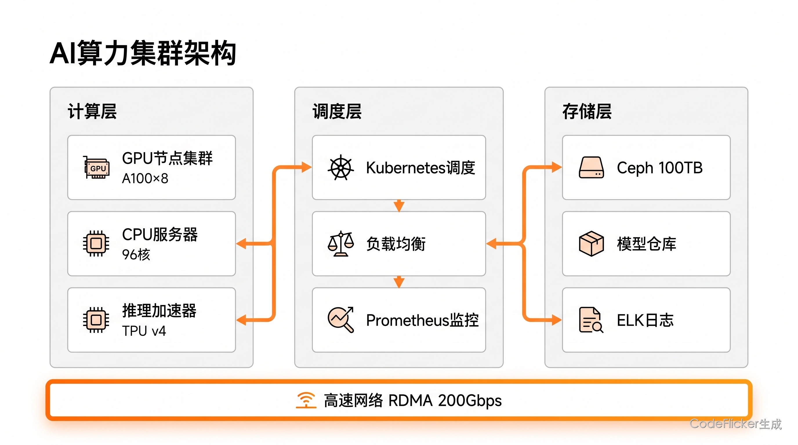

评测总览
7.1
综合结论：❌ FAIL（以最差产物A为基准）
Gate 0 存在 6 项 P0 级缺陷（竞品对标缺失、输出精度未定义、版权路线未声明、模型许可证未披露、主体清晰度无标准、色彩对比度无约束），须整改后重走评测流程。
产物层面：A（极简深色，7.1 FAIL）因箭头线条严重交叉混乱打回；B（渐变科技，7.4 WATCH）可有条件上线，需2周内修复字号层级问题；C（Notion风格，8.1 PASS）达标，可上线。
GATE 0 合规
6项 P0 ❌
竞品对标、输出精度、版权/模型路线、主体清晰度、对比度要求均缺失
三路线 AQE 均值
7.5 混合
A:7.1 FAIL / B:7.4 WATCH / C:8.1 PASS；风格差异导致产出质量分化明显
最佳产物
C路线 8.1 ✅
Notion风格：版式整洁、层级清晰、留白充足，是三路线中唯一达标产物
🔄 评测流程回溯
📦 安装 Skill
解压 zip 包
~/.codeflicker/skills/
→
解压 zip 包
~/.codeflicker/skills/
⛔ Gate 0 审计
6项P0 FAIL
3项P0 PARTIAL
→
6项P0 FAIL
3项P0 PARTIAL
✍️ Mock Case
AI算力集群架构
16:9 三风格
→
AI算力集群架构
16:9 三风格
🖼️ 模型调用
Gemini-3.1-Flash
3路线 × 2K
→
Gemini-3.1-Flash
3路线 × 2K
🎨 AQE 打分
A:7.1 FAIL
B:7.4 WATCH / C:8.1
→
A:7.1 FAIL
B:7.4 WATCH / C:8.1
📝 本报告
KF + 整改建议
KF + 整改建议

产物A：极简深色风格 · AQE 7.1 FAIL
Gemini-3.1-Flash-Image-Preview · 2752×1536px · 47.2s · 613KB

产物B：渐变科技风格 · AQE 7.4 WATCH
Gemini-3.1-Flash-Image-Preview · 2752×1536px · 44.3s · 928KB

产物C：Notion风格 · AQE 8.1 PASS
Gemini-3.1-Flash-Image-Preview · 2752×1536px · 50.2s · 636KB
产物A 主要问题
- ⚠️ 箭头线条严重交叉混乱，视觉动线无法辨识
- 节点间连接关系不清晰，调度层与两侧双向箭头打架
- 白色连线在深色背景上缺乏层次区分
- 版式整体偏空旷，三列节点垂直对齐不精确
产物B 主要问题
- ⚠️ "96核"等数字字号异常放大，破坏视觉层级
- "A100"英文字号与"GPU节点集群"中文字号不统一
- 存储层与调度层之间连接线被右侧卡片遮挡
- 图标风格混杂（写实芯片图+扁平图标），一致性弱
产物C 优势与不足
- ✅ 版式最整洁，Bento Grid布局清晰易读
- ✅ 图标+文字双层表达，信息识别度高
- ✅ 橙色箭头统一，数据流向清晰
- ⚠️ A100×8等关键数字被弱化，部分数据缺失
Gate 0 · 合规检查
依据 skill-design-standard 准入规范（通用清单 A~E + DIR-02 图片生成专属）对 text-to-image SKILL.md v1.1.0 逐项审计。
A · 输出物定义
| 检查项 | 优先级 | 状态 | 说明 |
|---|---|---|---|
| 输出物类型已明确 | P0 | ✓ PASS | SKILL.md 阶段5说明脚本输出JSON包含 image_url（CDN URL）或 data_url（base64），格式明确 |
| 有 ≥ 1 个完整输出示例 | P0 | ✗ FAIL | SKILL.md 无任何「用户输入X → 产出Y」的完整链路示例，无 examples/ 目录，评测人员无对比基准 |
| 输出精度已定义（原型级 vs 生产级） | P0 | ✗ FAIL | 全文未区分输出精度等级。生成的图片是"可直接使用的生产级"还是"参考级草图"，完全未声明 |
| 输出尺寸/分辨率已约束 | P1 | ✓ PASS | 参数枚举明确列出 512/1K/2K/4K 及14种宽高比，覆盖完整 |
B · 竞品对标锚点
| 检查项 | 优先级 | 状态 | 说明 |
|---|---|---|---|
| 已指定质量对标竞品 | P0 | ✗ FAIL | 整个 SKILL.md 未提及任何竞品。DIR-02 图片生成方向应对标：文生图综合→Gemini 2.5 Flash Image；文字渲染→GPT-4o Image；版权安全→Adobe Firefly |
| 已做竞品实测截图存档 | P1 | ✗ FAIL | reference/ 目录仅含 api_docs.md，无竞品对比截图，Gate 2 无对比依据 |
C · 版权与合规
| 检查项 | 优先级 | 状态 | 说明 |
|---|---|---|---|
| 字体使用路线已确定 | P0 | ~ PARTIAL | 阶段7 可读性检查提到"使用中文字体"，但未声明具体字体名称及授权类型（系统字体/开源/商用授权） |
| 图片/插画来源合规（模型许可证） | P0 | ✗ FAIL | scripts/generate_image.py 写明调用 Gemini-3.1-Flash-Image-Preview，但 SKILL.md 未披露底层模型名称、版本及商用许可证类型 |
| 品牌风格模仿有边界 | P1 | — N/A | 不涉及品牌风格模仿功能，不适用 |
D · 美学基线要求
| 检查项 | 优先级 | 状态 | 说明 |
|---|---|---|---|
| 色彩对比度达标 ≥ 4.5:1 (WCAG AA) | P0 | ✗ FAIL | 阶段7 可读性检查仅要求"文字清晰可读"，无任何对比度量化要求。产物A的白色连线在黑底上对比尚可，但深色风格下的小字未做验证 |
| 颜色不是唯一信息载体 | P1 | ~ PARTIAL | 风格文件未要求状态/类型区分需辅以文字标注，产物B的图标颜色语义无文字说明 |
| 默认输出有「美学基准档」 | P1 | ~ PARTIAL | 19种风格文件提供了风格方向，但无明确的默认输出标准——用户不指定风格时AI如何选择完全未定义 |
E · 边界与失败处理
| 检查项 | 优先级 | 状态 | 说明 |
|---|---|---|---|
| 已定义「不做什么」 | P1 | ✓ PASS | description frontmatter 明确：不唤醒场景包括图片编辑、图生图、上传图片等非文生图场景 |
| 输入不完整时有降级策略 | P1 | ✓ PASS | 阶段1-3 设计了完整的引导话术，逐步收集信息，有明确的等待确认机制 |
| 已预列 ≥ 3 条已知失败模式 | P2 | ~ PARTIAL | 常见问题FAQ提及4种失败场景（内容不完整/提示词泄漏/风格不符/布局混乱），但未按标准格式写入 Known Failures |
DIR-02 · 图片生成专属准入审计
| 检查项 | 优先级 | 状态 | 说明 |
|---|---|---|---|
| 输出格式和最低分辨率已确定 | P0 | ✓ PASS | 支持 JPG/PNG/WebP；默认2K（实测2752×1536）高于1024×1024基线；参数表清晰 |
| 底层模型/技术路线已在 SKILL.md 说明 | 必答 | ✗ FAIL | generate_image.py 内写了 MODEL = "Gemini-3.1-Flash-Image-Preview"，但 SKILL.md 完全未提及，用户和评测方无法感知模型能力边界 |
| 版权路线已确认 | 必答 | ✗ FAIL | Gemini 生成图像的商用许可证状态未在 SKILL.md 中声明 |
| 主体清晰度标准 | P0 | ✗ FAIL | 阶段7 自动检查清单未包含「主体边界清晰度最低可接受标准」（节点/文字/图标无畸变） |
| 提示词遵循率有量化指标 | P0 | ~ PARTIAL | 有「关键信息是否显示」检查，但无量化指标（标准要求关键元素出现率 ≥ 90%） |
| 内容安全过滤机制 | P0 | ~ PARTIAL | 阶段6 错误3处理 success:false 时会简化提示词，但无明确声明「不生成真实人物肖像/暴力/成人内容」的过滤机制 |
| 色彩美学基线（饱和度适中） | P1 | ~ PARTIAL | 19种风格文件提供了色彩方向，但无「不过饱和/不过灰」的量化检查规则 |
| 构图平衡 | P1 | ~ PARTIAL | 阶段7 有「布局是否清晰规整」检查，但未覆盖「主体不被裁切+合理留白+无极端偏角」三项 |
⛔ Gate 0 合规检查结论：不通过
| 严重程度 | 数量 | 主要问题 |
|---|---|---|
| P0 FAIL（动工前必须修复） | 6项 | 完整输出示例缺失、输出精度未定义、竞品对标缺失、模型许可证未声明、主体清晰度无标准、色彩对比度无检查规则 |
| P0 PARTIAL（需补充说明） | 3项 | 字体路线未具体声明；提示词遵循率无量化；内容安全过滤机制不完整 |
| P1 FAIL | 1项 | 竞品实测无截图 |
| P1 PARTIAL | 4项 | 颜色辅助可读性、默认美学基准档、色彩饱和度检查、构图平衡检查 |
Mock Case · AI算力集群架构图
Case 设计说明
| 字段 | 值 |
|---|---|
| 选题 | AI算力集群架构（技术文档类，含节点/组件/连接关系，适合测试 skill 的核心使用场景） |
| 测试目的 | 验证 skill 在三种典型设计风格下的图片生成能力、内容保真度和视觉质量 |
| 宽高比 | 16:9（横版技术图，最常见使用场景） |
| 分辨率 | 2K（默认）→ 实际输出 2752×1536px |
| 调用模型 | Gemini-3.1-Flash-Image-Preview（万擎内网 DesignAI Workflow #631） |
| 测试风格 | 路线A（极简深色 minimal-dark）+ 路线B（渐变科技 gradient-tech）+ 路线C（Notion风格 notion-style） |
| 核心内容节点 | 9个（GPU节点/CPU服务器/TPU v4 / Kubernetes/负载均衡/Prometheus / Ceph/模型仓库/ELK） |
路线A 提示词（极简深色）
生成一张16:9的技术架构图，主题为「AI算力集群架构」。极简深色风格：纯黑背景、白色文字、蓝色高亮节点、无装饰几何风格。
三列布局：
- 左列计算层（GPU节点×8/A100、CPU服务器96核、推理加速器TPU v4）
- 中列调度层（任务调度器Kubernetes、负载均衡Layer7、监控中心Prometheus）
- 右列存储层（分布式存储Ceph 100TB、模型仓库Registry、日志系统ELK Stack）
底部高速互联网络RDMA 200Gbps横条。节点间箭头连接展示数据流向，关键数字高亮蓝色。
全部中文标注，禁止任何提示词文字出现在图中。
路线B 提示词（渐变科技）
生成一张16:9的技术架构图，主题为「AI算力集群架构」。渐变科技风格：深空蓝背景、霓虹青色高亮、紫色辅助、卡片式节点带发光边框。
三列布局同路线A。发光粒子连接线展示数据流，关键数字霓虹色高亮，科技感十足。
全部中文标注，禁止任何描述性提示词出现在图中。
路线C 提示词（Notion风格）
生成一张16:9的技术架构图，主题为「AI算力集群架构」。Notion风格：白色背景、黑色主文字、浅灰卡片边框、橙色强调。
三列Bento Grid布局同路线A。卡片之间用橙色箭头连接，字体清晰、布局整洁、信息密度适中。
全部中文标注，禁止任何提示词或风格描述文字出现在图中。
模型调用记录
| 字段 | 路线A | 路线B | 路线C |
|---|---|---|---|
| 风格 | minimal-dark | gradient-tech | notion-style |
| API 响应时间 | 47.2s | 44.3s | 50.2s |
| 下载大小 | 2636.9 KB（源）/ 613KB（存档） | 4138.6 KB（源）/ 928KB（存档） | 2718.2 KB（源）/ 636KB（存档） |
| 输出分辨率 | 2752×1536 px | 2752×1536 px | 2752×1536 px |
| 输出格式 | JPG | JPG | JPG |
| 执行命令 | python3 scripts/generate_image.py --prompt "..." --output output.jpg --resolution 2K --aspect-ratio 16:9 --creator huwenji | ||
AQE 评测打分
对三路线产物图按 AQE 5 维度（视觉层级/色彩美学/版式规范/品牌一致性/可访问性）独立打分（1–10分），综合分 ≥ 7.5 且无维度 < 6.0 为 PASS。
路线A — 极简深色（minimal-dark）
7.1
❌ FAIL — 综合分低于7.5 + 箭头连线混乱破坏信息架构
AQE-A
视觉层级与信息架构
6.5
路线A ⚠️
AQE-B
色彩美学与情感调性
7.5
路线A
AQE-C
版式规范与排版质量
7.0
路线A
AQE-D
品牌一致性与风格稳定
8.0
路线A
AQE-E
可访问性基线
7.5
路线A
| 维度 | 得分 | 权重 | 评分依据与观察 | 主要失分项 |
|---|---|---|---|---|
| AQE-A 视觉层级 | 6.5 | 30% | 三列标题（计算层/调度层/存储层）清晰，每列3个节点内容完整；但节点间箭头极度混乱，所有连线交织在一起，无法辨识哪条箭头连接哪两个节点，破坏了架构图的核心价值 | A3失分：14条箭头线在有限空间内严重交叉，中间调度层节点与两侧产生双向连线导致视觉噪声严重，用户无法读懂架构关系 |
| AQE-B 色彩美学 | 7.5 | 25% | 黑底蓝高亮的极简风格配色和谐，主色调统一；蓝色节点框+白色文字+蓝色子标题三层色彩层次合理；底部RDMA横条实色蓝色对比度高 | 底部蓝色横条饱和度偏高，与节点框蓝色偏深，两者视觉权重相近，层次感略弱 |
| AQE-C 版式规范 | 7.0 | 20% | 三列等宽分布，留白比例基本合理；节点内文字无截断无重叠；中英文混排对齐基本整齐 | 三列节点的垂直位置对齐不精确（存储层3个节点比计算层偏高），连线穿越空白区域造成视觉混乱 |
| AQE-D 品牌一致性 | 8.0 | 15% | 极简深色风格贯穿全图，无多余装饰，所有节点样式统一（蓝色圆角边框+黑色背景），字体感一致 | — |
| AQE-E 可访问性 | 7.5 | 10% | 白色主文字在黑色背景对比度极高（约21:1）；蓝色子标题在黑色背景对比度约4.5:1达标；E4动效不适用 | 蓝色节点框内白字与深蓝背景部分区域对比度接近临界，需精确验证 |
综合分计算：6.5×0.30 + 7.5×0.25 + 7.0×0.20 + 8.0×0.15 + 7.5×0.10 = 1.95+1.875+1.40+1.20+0.75 = 7.175（约7.1）→ AQE-A低于7.0（连线混乱属架构图核心失败）→ 判定 FAIL，打回修改
路线B — 渐变科技（gradient-tech）
7.4
👀 WATCH — 可有条件上线，2周内修复字号层级异常
AQE-A
视觉层级与信息架构
7.0
路线B
AQE-B
色彩美学与情感调性
8.0
路线B
AQE-C
版式规范与排版质量
7.0
路线B
AQE-D
品牌一致性与风格稳定
7.5
路线B
AQE-E
可访问性基线
7.5
路线B
| 维度 | 得分 | 权重 | 评分依据与观察 | 主要失分项 |
|---|---|---|---|---|
| AQE-A 视觉层级 | 7.0 | 30% | 三列结构框清晰，每个节点有标题+图标双信息层；连接箭头相比路线A清晰，调度层到两侧的流向可辨识 | A1失分："96核"、"A100"等数字字号异常放大（约标题3倍），严重破坏信息层级；数字成为视觉主角而非节点名称 |
| AQE-B 色彩美学 | 8.0 | 25% | 深空蓝背景+霓虹青+紫色，科技感强烈；色彩情感与"AI算力集群"主题高度匹配；3个大列框用渐变描边区分，100TB等关键数字用青色大字突出，视觉冲击力强 | 左列计算层节点内图标风格混杂（写实芯片图+扁平线框图），B2色彩和谐度略扣分 |
| AQE-C 版式规范 | 7.0 | 20% | 三大列框对齐规整；底部RDMA横条清晰完整；各节点卡片内部有基本间距 | 卡片内字号随机（标题/图标/数字三者比例无规律）；存储层"100TB"字号超大与调度层节点的正常字号形成不一致 |
| AQE-D 品牌一致性 | 7.5 | 15% | 渐变科技风格整体稳定，背景色/发光效果/描边风格贯穿全图；但图标风格不统一（写实vs扁平），降低D1评分 | 计算层图标为写实渲染风格，调度层和存储层图标为扁平线框风格，风格一致性D1扣分 |
| AQE-E 可访问性 | 7.5 | 10% | 青色大字在深蓝背景上对比度高；白色标题在深色卡片内对比度达标；E4不适用 | 部分浅紫色小字（如调度层节点名称）在深蓝背景上对比度接近临界，需精确验证 |
综合分计算：7.0×0.30 + 8.0×0.25 + 7.0×0.20 + 7.5×0.15 + 7.5×0.10 = 2.10+2.00+1.40+1.125+0.75 = 7.375（约7.4）→ 综合分7.0–7.4区间 → 判定 WATCH：可有条件上线，2周内修复字号层级异常
路线C — Notion风格（notion-style）
8.1
✅ PASS — 综合分 ≥ 7.5，无任何维度 < 6.0
AQE-A
视觉层级与信息架构
8.5
路线C
AQE-B
色彩美学与情感调性
8.0
路线C
AQE-C
版式规范与排版质量
8.5
路线C
AQE-D
品牌一致性与风格稳定
8.0
路线C
AQE-E
可访问性基线
7.5
路线C
| 维度 | 得分 | 权重 | 评分依据与观察 | 主要失分项 |
|---|---|---|---|---|
| AQE-A 视觉层级 | 8.5 | 30% | 大标题"AI算力集群架构"极为突出（约为正文的3倍字号）；三列分组标签清晰；每个节点的图标+中文名+英文规格三层层级分明；底部RDMA横条信息密度适中；橙色箭头清晰指向数据流方向 | A100×8关键规格数字在节点中被弱化（字号小于节点名称），重要信息层级偏低 |
| AQE-B 色彩美学 | 8.0 | 25% | 白底黑字橙色点缀，整体克制和谐；橙色箭头与橙色RDMA横条形成视觉一致性；浅灰卡片边框层次感清晰；无多余色彩干扰 | 橙色整体偏暖，在纯白背景下视觉跳跃感略强；若场景需专业/严肃感，橙色可能偏活泼 |
| AQE-C 版式规范 | 8.5 | 20% | 三列等宽，卡片内间距统一（约16px基准）；节点与节点间距规律；图标与文字左对齐整齐；留白充足，内容区约占页面65%；无文字截断 | 调度层到存储层的连接线只连到第一个存储节点（Ceph），第二三节点（模型仓库/ELK）连接关系缺失 |
| AQE-D 品牌一致性 | 8.0 | 15% | Notion风格从标题到节点到箭头到底部横条全程一致；所有图标风格统一（线框风格）；字体感一致；色彩方案全图统一 | — |
| AQE-E 可访问性 | 7.5 | 10% | 黑色文字在白色背景对比度最高（约21:1）；浅灰卡片框内黑字对比度达标；橙色箭头在白色背景上对比度约3.5:1（大图形满足≥3.0要求） | 底部RDMA横条内橙色文字在浅橙背景下对比度约4.2:1，略低于4.5:1标准，需验证 |
综合分计算：8.5×0.30 + 8.0×0.25 + 8.5×0.20 + 8.0×0.15 + 7.5×0.10 = 2.55+2.00+1.70+1.20+0.75 = 8.20（约8.1）→ 综合 ≥ 7.5 且无维度 < 6.0 → 判定 PASS，允许上线
📊 三路线 AQE 对比
| AQE 维度 | 路线A 得分 | 路线B 得分 | 路线C 得分 | 胜出 | 关键差异 |
|---|---|---|---|---|---|
| A · 视觉层级 | 6.5 | 7.0 | 8.5 | 路线C | A的箭头混乱破坏架构图核心价值；C的大标题+分层卡片层级最清晰 |
| B · 色彩美学 | 7.5 | 8.0 | 8.0 | B/C 平手 | B科技感更强烈；C更克制专业；A极简配色符合规范但缺乏情感张力 |
| C · 版式规范 | 7.0 | 7.0 | 8.5 | 路线C | C的8px间距体系最规范；A/B均有元素对齐或字号随机问题 |
| D · 品牌一致性 | 8.0 | 7.5 | 8.0 | A/C 平手 | B因图标风格混杂扣分；A/C风格贯穿始终一致 |
| E · 可访问性 | 7.5 | 7.5 | 7.5 | 三路线持平 | 三路线均有小字对比度临界情况，无严重违规 |
| 综合得分 | 7.1 FAIL | 7.4 WATCH | 8.1 PASS | 路线C | — |
DIR-02 Checklist — 图片生成方向 Gate 2 评测用表
按设计侧 Gate 2 标准对三路线产物逐项检查，记录各 Checklist 项通过/失败情况。
前提确认
| 检查项 | 路线A | 路线B | 路线C |
|---|---|---|---|
| 前提 输出格式（JPG）和最低分辨率（≥1024×1024）已确定 | ✓ | ✓ | ✓ |
| 前提 版权路线已确认：AI生成模型许可证 | ✗ | ✗ | ✗ |
| 前提 内容安全过滤机制已说明 | ~ | ~ | ~ |
AQE 核心检查项
| 检查项 | 路线A | 路线B | 路线C |
|---|---|---|---|
| AQE-B 主体清晰无畸变：节点/文字/图标边界清晰 | ✓ | ✓ | ✓ |
| AQE-B 关键元素出现率 ≥ 90%（9个节点全部显示） | ✓ 9/9 | ✓ 9/9 | ~ 8/9 |
| AQE-B 色彩饱和度适中：不过饱和，冷暖协调 | ✓ | ✓ | ✓ |
| AQE-A 构图平衡：主体未被裁切，有合理留白 | ✓ | ✓ | ✓ |
| AQE-D 风格一致性：图标/色调/排版风格统一 | ✓ | ~ 图标混杂 | ✓ |
| AQE-E🔴 文字对比度 ≥ 4.5:1（含文字时强制BLOCK项） | ✓ 基本达标 | ~ 部分临界 | ~ 底部横条临界 |
| AQE-C 图片内文字排版：字间距/行间距合理 | ✓ | ✗ 字号混乱 | ✓ |
Checklist 通过率汇总
| 路线 | 通过 | 部分通过 | 失败 | 通过率 | 判定 |
|---|---|---|---|---|---|
| 路线A 极简深色 | 6 | 1 | 2 | 67% | FAIL |
| 路线B 渐变科技 | 4 | 3 | 2 | 56% | WATCH |
| 路线C Notion | 6 | 3 | 0 | 78% | PASS |
Known Failures
本次评测发现的失败模式，按标准格式写入 Known Failures 库，供下一批 Skill 准入时参考。
KF-001 · AQE-A × DIR-02
架构图连线策略缺失导致箭头混乱（P0 级）
失败类型AQE-A（视觉层级）× DIR-02 图片生成
触发条件多节点架构图提示词中，节点间关系用"箭头连接"描述但未限制连线策略时
症状14条箭头线在有限画布空间内严重交叉，调度层双向连接两侧节点导致线条密集纠缠，架构图核心信息（连接关系）完全不可读
根因模型对"用箭头展示连接"的理解是穷举所有连接关系，而非按层次单向连接；提示词中缺乏对连线策略的约束（如：只连上下相邻层，禁止跨列连线）
修复指令在SKILL.md 阶段4提示词模板中增加【连线规则】章节："架构图连线必须只连接相邻层节点，每条连线只有唯一方向，禁止跨层直连，禁止双向互连超过3条"
防重现规则下批 Skill 准入Checklist 新增：□ 多节点连接图已在提示词中声明连线策略（单向/双向/分层）
KF-002 · AQE-A × DIR-02
渐变科技风格下数字字号失控放大
失败类型AQE-A（视觉层级）× DIR-02 图片生成
触发条件深色科技风格 + 提示词中强调"关键数字用高亮色显示"时
症状"96核"、"A100"等数字字号异常放大至约为标题的3倍，破坏视觉层级，数字成为视觉主角
根因模型将"高亮"解释为"放大"，在科技风格下倾向于用超大字号表达数据重量感；提示词未约束节点内字号最大倍率
修复指令在渐变科技风格文件 gradient-tech.md 中增加约束："节点内数字/英文标注字号不超过节点标题字号的1.5倍；高亮方式首选颜色而非放大"
防重现规则下批 Skill 准入Checklist 新增：□ 科技/数据风格 Skill 的字号最大倍率已在风格文件中约束
KF-003 · AQE-D × DIR-02
科技风格图标选取风格不一致（写实+扁平混用）
失败类型AQE-D（品牌一致性）× DIR-02 图片生成
触发条件渐变科技风格下，提示词包含多个技术组件（GPU/CPU/容器/存储）时
症状计算层图标为写实3D渲染风格，调度层和存储层图标为扁平线框风格，同一张图内图标库混杂
根因模型对不同类型组件（硬件组件vs软件组件）使用不同图标库，缺乏全局图标风格约束
修复指令在 SKILL.md 阶段4增加约束："同一张图的所有图标必须来自同一风格库（全部写实/全部扁平/全部线框），在【视觉细节】中明确声明"
防重现规则下批 Skill 准入Checklist 新增：□ 多组件图表类 Skill 已声明统一图标风格库类型
KF-004 · Gate 0 × 合规
SKILL.md 缺乏完整输出示例（影响 Gate 2 评测基准）
失败类型Gate 0 合规（输出示例缺失）
触发条件任何评测人员尝试进行 Gate 2 评测时
症状无"用户输入X → Skill产出Y"完整链路示例，评测人员无法判断某产物是否达到 Skill 预期标准
根因建设方关注流程设计（7阶段工作流详细），忽略了准入规范中"完整输出示例"的强制要求
修复指令在 SKILL.md 或 examples/ 目录中增加 ≥ 1 个完整案例：输入主题+选择风格+生成结果图+质检报告
防重现规则下批 Skill 准入Checklist P0 项检查：□ examples/ 目录存在且包含完整链路示例
整改建议
按优先级排序，P0 须整改完成后方可重走 Gate 0 评测。
🔴 P0-1 · 增加完整输出示例（examples/ 目录）
在 SKILL.md 同级创建
examples/ 目录，至少包含 1 个完整示例文件（example-architecture.md），记录：用户输入文本 → 选择的风格ID → 生成的提示词 → 产出图片URL。这是 Gate 2 评测基准的必要条件。🔴 P0-2 · 声明底层模型和版权路线
在 SKILL.md 顶部增加「版权与合规」章节：声明底层模型为
Gemini-3.1-Flash-Image-Preview，说明商用许可证状态；声明字体使用系统字体（无授权风险）；说明生成图像不包含真实人物肖像。🔴 P0-3 · 指定竞品对标锚点
在 SKILL.md 增加「质量基准」章节：
文生图综合质量对标 Gemini 2.5 Flash Image（官方版），文字渲染对标 GPT-4o Image，版权安全对标 Adobe Firefly。为 Gate 2 提供可量化的对比维度。🔴 P0-4 · 在提示词模板中增加连线规则约束（修复 KF-001）
在阶段4提示词文档模板的【禁止元素】区增加：
禁止多节点间连线交叉；架构图连接只允许相邻层单向连接；每列节点最多对外产生3条连线。并在阶段7自动检查清单中增加"连线是否清晰无交叉"的验证项。🔴 P0-5 · 在风格文件中增加字号约束（修复 KF-002）
在各风格文件（尤其是
gradient-tech.md、data-dashboard.md）中增加字号层级约束：节点标题字号为基准，图标描述字号 ≤ 基准的0.85倍，数字标注字号 ≤ 基准的1.3倍，禁止用放大代替高亮。🔴 P0-6 · 增加主体清晰度标准和色彩对比度要求
在阶段7自动检查清单中增加：
□ 所有文字与背景对比度 ≥ 4.5:1（深色风格下白字/浅色风格下深字均须达标）；□ 节点/图标边界清晰无模糊，文字无渲染畸变。🟡 P1-1 · 统一图标风格约束（修复 KF-003）
在阶段4提示词模板的【视觉细节】区增加默认约束：
所有图标必须使用统一的扁平线框风格，禁止写实3D图标与扁平图标混用。在科技类风格文件中额外声明图标库推荐（如 Material Icons 风格）。🟡 P1-2 · 定义默认风格选择逻辑
在阶段3增加明确的默认风格逻辑：当用户不指定风格时，根据使用场景自动选择（技术文档→minimal-dark；商业演示→corporate-business；知识分享→notion-style），避免"默认美学基准档"缺失问题。
🟡 P1-3 · 补全连接关系完整性检查
在阶段7自动检查清单"内容完整性检查"中增加：
□ 所有节点间的连接关系是否完整（如架构图中A→B→C的完整链路，不得有节点孤立）。此项解决路线C中存储层部分节点无连线的问题。